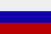

|
Länderinformationen Russland
1. Das Wichtigste auf einen Blick2. Sehens- und Hörenswertes
3. Politik & Gesellschaft
4. Schmeckenswertes
5. Medien
6. Reisetipps
1. Wissenswertes
|  | Wir haben für Sie hier
Wissenswertes, Wichtiges, Kurioses, Interessantes und Kulinarisches
zusammengetragen. Dies und noch viele Informationen mehr rund um
Russland, seine Sprache und die Menschen dort, sollen Ihnen die
Reisevorbereitungen erleichtern und Ihnen einen Vorgeschmack dessen
geben, was Sie in Russland erwartet. |
 Die russische Sprache
Die russische Sprache
Russisch ist die am weitesten verbreitete aller slawischen Sprachen: mehr als 160 Millionen Menschen sprechen es als ihre Muttersprache. Knapp 70 Millionen Menschen sprechen es zudem als Zweitsprache, sie verwenden also Russisch auch im alltäglichen Gebrauch, sprechen jedoch eine andere Muttersprache. Bis zum Zerfall des Ostblocks, im Jahr 1989, wurde Russisch zudem in den Ländern des Warschauer Paktes als erste Fremdsprache gelehrt. Nach der Wende wurde es jedoch recht schnell von der englischen Sprache im Schulunterricht verdrängt. Aber auch auf internationaler Ebene hat Russisch viel von der einstigen Bedeutung eingebüßt, die es während des Bestehens der Sowjetunion besaß.
Schätzungen zufolge leben heute knapp drei Millionen russische Muttersprachler in der Bundesrepublik Deutschland – die meisten von ihnen sind deutschstämmige Spätaussiedler und deren Angehörige (knapp 2 Millionen) sowie russische Juden (rund 200.000). Vielleicht kennen Sie sogar jemanden in Ihrer Arbeit oder Ihrer Nachbarschaft, der Russisch als Muttersprache spricht und den Sie mit Ihren Russischkenntnissen überraschen können.
Russisch wird, wie Sie sicher wissen, mit dem kyrillischen Alphabet geschrieben. Um Ihnen das Lesen und Erlernen dieser fremden Schrift zu erleichtern, haben wir für Sie dieses Alphabet zusammen mit einer lateinischen Umschrift und Hilfen zur Aussprache zusammengestellt.
Das
kyrillische Alphabet |
|||
Buchstabe |
Umschrift |
Buchstabe |
Umschrift |
А
а |
A
a |
Р
р
|
R
r |
Б
б
|
B
b |
С
с
|
S
s |
В
в
|
W
w |
Т
т
|
T
t |
Г
г
|
G
g |
У
у
|
U
u |
Д
д
|
D
d |
Ф
ф
|
F
f |
Е
е
|
E
e (am Wortanfang und nach ъ
und ъ: Je je) |
Х
х |
Ch
ch |
Ё
ё
|
Jo
jo (nach
ж, ч, ш, щ: O o) |
Ц
ц |
Z
z |
Ж
ж
|
Sch
sch |
Ч
ч
|
Tsch
tsch |
З
з
|
S
s |
Ш
ш
|
Sch
sch |
И
и
|
I
i |
Щ
щ |
Schtsch
schtsch |
Й
й
|
I
i |
Ъ
ъ
|
(verhärtet
vorangehenden Konsonanten) |
К
к
|
K
k |
Ы
ы
|
Y
y |
Л
л
|
L
l |
Ь
ъ
|
(erweicht
vorangehenden Konsonanten) |
М
м
|
M
m |
Э
э
|
E
e |
Н
н
|
N
n |
Ю
ю
|
Ju
ju |
О
о
|
O
o |
Я
я
|
Ja
ja |
П
п
|
P
p |
||
Im Russischen gibt es auch eine ganze Reihe von Wörtern, die aus dem Deutschen kommen und Eingang in die russische Sprache gefunden haben. Diese können Sie leicht erraten – Sie brauchen bloß die Buchstaben im Alphabet nachschlagen – und lernen so gleichzeitig die Schrift besser kennen:
Einige
russische Wörter deutschen Ursprungs |
|||
айсберг
|
фейерверк |
полтергейст
|
|
брудершафт
|
гастарбайтер
|
вундеркинд
|
|
эндшпиль |
ландшафт
|
цугцванг
|
|
 Bevölkerung
Bevölkerung
Zwar ist die Fläche Russlands gewaltig, die Bevölkerung lebt allerdings sehr ungleich verteilt und weite Teile des Landes sind kaum bewohnt. Von den insgesamt rund 142 Millionen russischen Staatsbürgern lebt die überwiegende Mehrheit (rund 105 Millionen) im europäischen Westteil des Landes. Der Rest der Bevölkerung lebt auf dem mehr als dreimal so großen asiatischen Ostteil Russlands verteilt – wobei hier vorwiegend ein schmaler Streifen im Landessüden besiedelt ist, entlang der Städte, die die Transsibirische Eisenbahn verbindet.
Die russische Bevölkerung lebt vorwiegend urban (mehr als 70% leben in Städten). Die durchschnittliche Bevölkerungsdichte liegt bei 8 Menschen pro Quadratkilometer – wobei anzumerken ist, dass weite Teile Sibiriens nahezu unbewohnt sind. Zum Vergleich: Die Bevölkerungsdichte Deutschlands beträgt 230 Personen pro km².
Das Durchschnittsalter der russischen Bevölkerung liegt bei rund 38 Jahren und ist damit etwas niedriger als das Österreichs oder Deutschlands. Die durchschnittliche Lebenserwartung liegt in Russland bei knapp 66 Jahren. Anzumerken ist allerdings, dass die Lebenserwartung der Männer mit weniger als 60 Jahren deutlich geringer ist als die der Frauen (73 Jahre).
 Fläche
Fläche
Russland ist ein Land der Superlative: Gemessen an der Fläche ist es das größte Land der Erde – auf mehr als 17 Millionen Quadratkilometern erstreckt es sich von Osteuropa nach Asien und nimmt dabei etwa ein Achtel der gesamten Landfläche der Erde ein. Von der russischen Enklave Kaliningrad im äußersten Westen bis an die Küste des Pazifiks im äußersten Osten beträgt die Entfernung rund 8.000 Kilometer entlang des Breitengrades. Wenn Sie gar mit der Transsibirischen Eisenbahn reisen, die auf ihrem Weg von Moskau bis Wladiwostok eine Strecke von 9.300 Kilometern zurücklegt, benötigen Sie mindestens sechs Tage um einmal das Land zu durchqueren.
Zum Größenvergleich: Die Bundesrepublik Deutschland würde fast fünfzig Mal in die Fläche Russlands passen.
 Währung
Währung
In Russland bezahlt man mit dem (neuen) Rubel (рубль). Zudem gibt es auch noch eine Untereinheit des Rubels – die Kopeke (копейка) – deren Münzen jedoch kaum mehr in Umlauf sind, da sie nur einen sehr geringen Geldwert besitzen. Die russischen Geldscheine besitzen eine Wertigkeit von 5 bis 5.000 Rubel, Münzen sind in den Werten 1, 2, 5, und 10 Rubel in Umlauf. Einen tagesaktuellen Wechselkurs von Euro zu Rubel finden Sie im Internet, wenn Sie in einer Suchmaschine den Begriff „Währungsrechner“ eingeben (so erhalten Sie verschiedene Seiten, mit denen sich Währungen umrechnen lassen). Auch Ihre Bank wird Ihnen gerne den aktuellen Wechselkurs nennen.
 Wirtschaftliche Situation
Wirtschaftliche Situation
Die russische Wirtschaft hat in den letzten zehn Jahren nach einer Wirtschaftskrise im Jahr 1998 einen deutlichen Aufschwung erlebt mit Wachstumsraten von jährlich sechs bis sieben Prozent. Allerdings wirkt sich dieser Aufschwung regional recht unterschiedlich aus. Während in einigen Großstädten und Wachstumsregionen wie St. Petersburg oder Moskau der gewachsene Wohlstand anhand glitzernder Fassaden und schmucker Stadtviertel sichtbar wird, ist in vielen ländlichen Gebieten abseits der großen Handels- und Wirtschaftsstandorte noch wenig vom Wachstum zu spüren und weite Teile der Bevölkerung leben hier in Armut. Die Arbeitslosenquote liegt offiziell bei knapp sechs Prozent, da jedoch viele Erwerbslose nicht erfasst werden, ist sie de facto höher anzusetzen.
Russland verfügt über gewaltige Rohöl- und Gasvorkommen und liegt bei der Ölförderung auf dem zweiten Platz weltweit. So machten die Ölexporte allein im Jahr 2007 einen Umfang von fast 300 Milliarden € aus. Sie bilden somit einen steten Beitrag zur Tilgung der immensen Auslandsschulden und wirken sich auch positiv auf den Kurs des Rubels aus.
Neben Öl und Gas wird aus Russland vorwiegend Holz und Holzprodukte, Metalle und Chemikalien sowie zivile und militärische Technik ausgeführt. Da weite Teile der russischen Industrie modernisierungsbedürftig und noch nicht auf einem hohen technischen Stand sind, werden hauptsächlich technische Gerätschaften, High-Tech-Produkte und Medikamente nach Russland importiert. Wichtigster Handelspartner der Russischen Föderation ist die Bundesrepublik Deutschland, aus der etwa 14 Prozent aller Einfuhren nach Russland stammen.
 Zeitzonen
Zeitzonen
Russland hat eine so gewaltige Größe, dass es elf verschiedene Zeitzonen besitzt. Den geringsten Zeitunterschied zur Mitteleuropäischen Zeit, die auch in Deutschland gilt, gibt es zur russischen Enklave Kaliningrad, wo es lediglich eine Stunde später ist als hierzulande. Bis zum äußersten Osten Russlands, im Gebiet Kamtschatkas, beträgt der Zeitunterschied zu Mitteleuropa plus 11 Stunden, wenn Sie also um 13 Uhr in München gerade Mittagessen, beginnt in Kamtschatka bereits der neue Tag.
Der Zeitunterschied zur Hauptstadt Moskau – wie auch zum größten Teil des europäischen Russlands) beläuft sich auf plus zwei Stunden zur Mitteleuropäischen Zeit. Die Moskauer Zeit wird übrigens auch als Standardzeit im russischen Schienenverkehr verwendet, da es sonst bei den vielen Zeitzonen im Land zu Problem und Missverständnissen kommen würde.
Im nächsten Kapitel haben wir einige ausgesuchte Reiseempfehlungen zusammengestellt.